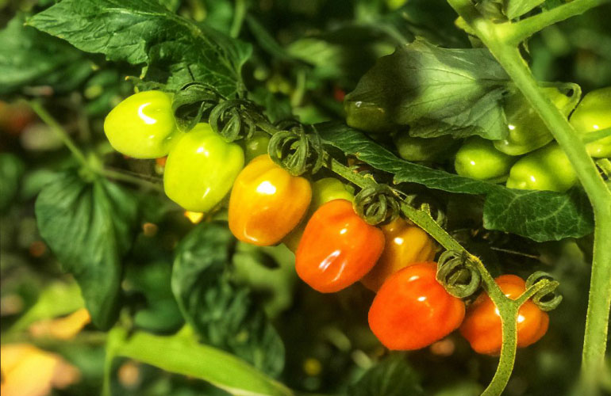
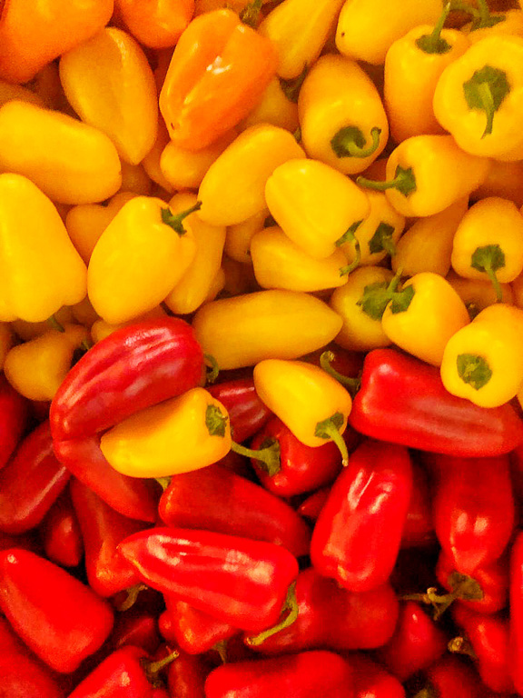
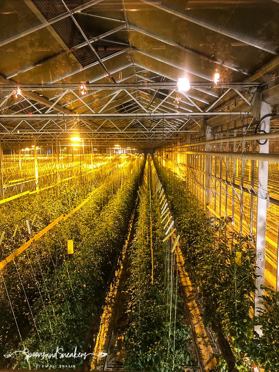
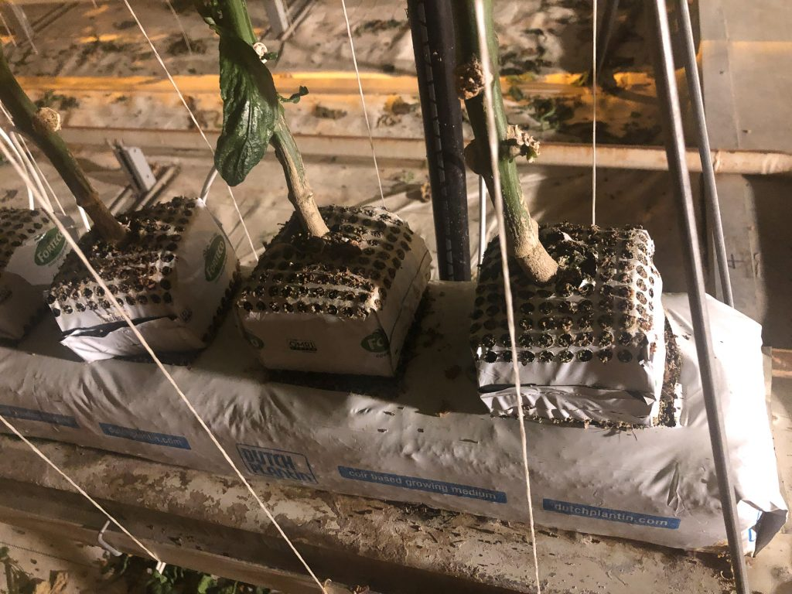
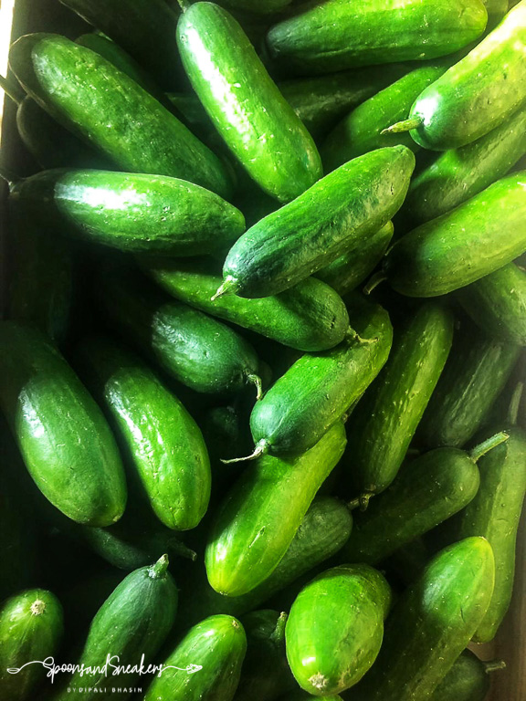
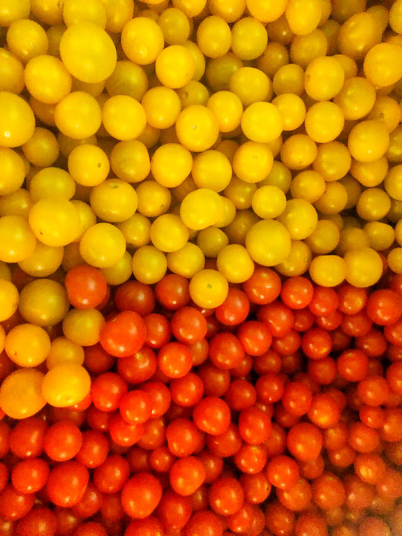

All About Hydroponics – A Nature’s Miracle
On 12 March 2019
Hydroponics – An Introduction
Hydroponics – the soil less method of growing plants – has been the most concerted horticulture production for years. Instead of using soil as a medium to provide nutrients to a plant, a nutrient-rich solution is used to deliver water and minerals to the roots in a temperature controlled environment. This method increases farming outputs and grows plants in habitats that wouldn’t normally sustain them.
During World War II, the military set up hydroponic units at Wake Island, a faraway base in the barren Pacific Islands. This island was a refueling stop for Pan-Am. Through the system of Hydroponics, they were able to produce enough food to cater to the airline staff and crew.
However, the emphasis on global prosperity and the growing need to feed an ever growing population has put greater emphasis on Hydroponics.
Tomatoes from Nature’s Miracle
What is Hydroponics?
The word ‘Hydroponics’ literally means growing plants in water. Hydroponics from the Greek words hydro (water) and ponos (labor) is the science of growing plants without soil. During photosynthesis, plants use sunlight and chlorophyll from the leaves to convert carbon dioxide from the air and water into glucose and oxygen. Put it in an equation and the formula looks like :
6CO2 + 6H2O → C6H12O6 + 6O2
The fruits and vegetables contain more nutrients as compared to traditional farming
This reiterates that soil is not an important factor in the production of fruits and vegetables. What plants, however, need are nutrients and water present in the soil to flourish.
Nature’s Miracle
The growing awareness about hydroponics has seen the setting up of hi-tech glasshouses all over the world. Greater Noida, the Dharampal Satyapal Group set up one of the first fully automated 4 – hectare hydroponic glasshouses in India, Nature’s Miracle.Applying the same cutting-edge agri-tech practices as in the Netherlands, plants are grown with their roots in the mineral solution or are supported by an inert medium such as perlite and coco peat which acts as a sterile substitute for soil.
The fully automated glasshouse
Water saving, fewer pesticides, replete with nutrients, higher growth rate are some of its key points that give enough reason for it to be in the spotlight. Since it uses no soil, the problems of weeding and pests are eliminated. Consumers get the healthiest and delicious fruit all through the year. Moreso, since the technique involves no soil, the roots of the plants are shorter, thereby accommodating more saplings in a restricted space. The saplings are treated with love, more like babies where even a blanket covers them if the temperature falls below a certain point. Music is played to them and staff with expertise and technical knowledge is constantly monitoring them. The result is extremely nutritious produce that is beautiful to look at and delicious to eat.
The seeds are planted in coco peat that serves as an inert medium.
Advantages of Hydroponics
- The wastage during harvest is reduced to a bare 4 percent. 96 percent of the produce converts to marketable produce.
- Compared to traditional farming, the use of pesticides is low.
- Since there is no soil involved, no tillage is required and therefore there are no weeds to contend with.
- Reduction in the time between harvest and customer reach implies an increase in the nutritional value of the end product.
- Indoor farming in a well regulated, climate controlled environment widens the scope of setting up farms in places where weather and soil conditions are not conducive to production.
- Since the time taken to grow is shortened, the yield is ten times more as compared to traditional farming.
- Fruit, weight, shape, and taste are more uniform and consistent throughout the year in a fully automated and enclosed greenhouse.
- There is total control over a hydroponic system. The ability to manage pH and nutrients ensures that the plants are replenished with the desired nutrients. Temperature control and light schedule facilitate greater plant production.
- Re-use of coco peat substrates for the subsequent plantings.
- It uses up to 90 percent more efficient use of water.
Disadvantages
Despite its numerous benefits the hydroponic farming is faced with a few challenges :
Cucumbers from Nature’s Miracle
- The need for time and commitment: In a soil-borne environment, plants can be left on their own for days and weeks, and they survive. In an indoor glasshouse, plants will die out more quickly without proper care and adequate knowledge. Even if one can automate the whole system, it still needs consistent gauging and fixing of the unexpected issues of operations.
- Expertise and sound technical knowledge are imperative in the smooth functioning of this type of farming. A lack of this aspect can render the whole project futile.
- Huge expenditure: Hydroponics farming requires a tremendous amount of money. There are expenses of hi-tech equipment, pump, nutrients, planters, glasshouse, blanket, lights, heaters etc. Many of the control systems need to be powered, which costs money. In conventional farming, factors such as soil, sunlight, and water are natural and practically free.
- Since this farming requires the use of water and electricity, any failure of either two can see a system collapse for a longer duration.
- Water-borne diseases can spread quickly and widely during the growth process, and water-borne microorganisms can contaminate solutions fairly easily.
- The hydroponic plants have smaller roots and hence, cannot support themselves as they grow taller.
- Dependence on acquiring a “turnkey” project package may discourage farmers since it entails high production costs.
While you can grow almost anything hydroponically, some vegetables will thrive in the soilless culture better than others. The vegetables that grow best hydroponically are strawberries, cucumbers, bell peppers, lettuce, basil, mint, cabbage, blueberries, spring onions, spinach, coriander, kale.
In Nature’s Miracle, yellow and red bell peppers, snack cucumbers, candy tomatoes, cherry tomatoes, beef tomatoes and jumbo sized strawberries grow beautifully. Though going such a great distance to Greater Noida is not practical, they sell their produce in Foodhall, Big Bazaar, Le Marche, Modern bazaar and soon on Amazon too.
The Orange and red tomatoes
With the ever-growing population and scarcity of land in future, hydroponics provides the solution of growing fruits and vegetables even in arid regions. But there’s one big challenge that needs to be tackled first. It is about changing the mindset of the customers to realize that food procured through hydroponics is healthy and much more nutritious than through traditional farming. The rationality of the price difference must be conveyed so that hydroponics farming is encouraged further.
Source : Spoon Sandsneakers